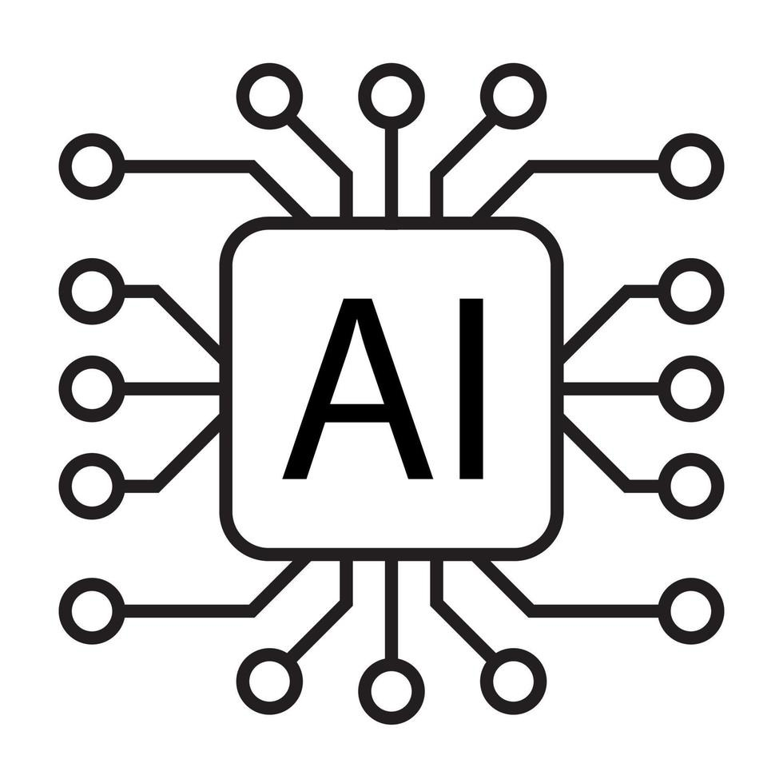

INTELIGÊNCIA ARTIFICIAL
A IA é capacidade de uma máquina reproduzir competências semelhantes às humanas como é o caso do raciocínio, a aprendizagem, o planeamento e a criatividade.
Exemplos:
ChatGPT;
Gemini da Google;
Luzia do WhatsApp.
As IA’s são uma ferramenta poderosa, que podem trazer muitos benefícios para a sociedade. No entanto, também tem seus malefícios, então entender os prós e contras de uma técnologia que cada vez mais cresce é fundamental.
- Automatização de Tarefas Repetitivas
- Melhora na Eficiência de Sistemas
- Inovação em diversas áreas
- Resolução de Problemas Complexos
- Desemprego, A automatização pode levar a perda de emprego e vários setores
- Vieses algorítmicos, a IA pode usar dados enviesados por usar dados encontrados na internet
INTERNET
A Internet é um sistema global de redes de computadores interligadas com o propósito de servir progressivamente usuários no mundo inteiro. A Internet traz uma extensa gama de recursos de informação e serviços.
A internet nada mais é que um grande banco de dados, que revolucionou o jeito que nos comunicamos, acessamos informações e realizamos tarefas. é uma ferramenta poderosa que pode ser utilizada tanto para o bem quanto para o mal.
- Fácil acesso a informação;
- Melhores meios de comunicação e entretenimento;
- Troca de conhecimento em geral.
- Fake News
- Ataques de ódio por meio de redes socias
- Acesso prematuro a conteúdos inapropriados
- Vício no mundo virtual
- Crime organizado utilizando certas plataformas
FUTURO DA INFORMÁTICA
Ao olharmos para o futuro, é evidente que a informática continuará a desempenhar um papel vital na formação do nosso mundo. De casas inteligentes a carros autônomos, as possibilidades são infinitas. Conforme o tempo passa, quebramos as limitações técnologicas criando novas áreas e melhorando as já existentes, como:
Computação Quântica;
Inteligência Artificial;
Realidade Virtual e Aumentada;
Computação em Nuvem.
O futuro da Informática muda não só sua área, mas sim, todas as áreas, portanto é importante aprender a se adaptar às mudanças técnológicas para se manter atualizado.
- Maior eficiência dos sistemas;
- A substituição de trabalhos perigosos para humanos por robôs;
- Novas técnologias que inovaram em diversas áreas da sociedade;
- Novas áreas de emprego.
- Desemprego, conforme robôs e maquinas se tornam mais eficientes a manufatura humana se torna desnecessária;
- O contato cada vez mais escasso com a natureza;
- Cada vez menos privacidade.